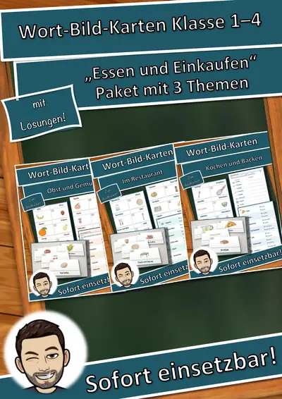

Lesespur: Essen verbindet: Speiseregeln und Fasten in den Religionen – Lesespurgeschichte mit Rätseln (Klasse 5)
Essen verbindet – Speiseregeln und Fasten in den Religionen – Lesespurgeschichte Ethik (Klasse 5)Begib dich mit deiner Klasse auf eine spannende Lesespur über das Essen in den Religionen! Ronja und Aziz besuchen ein internationales Straßenfest: Am Stand der Christen erfahren sie von der Fastenzeit vor Ostern, am Stand der Juden, was koscher bedeutet, am Stand der Muslime, was halal heißt und wie der Ramadan abläuft, am Stand der Hindus, warum viele kein Rindfleisch essen, und am Stand der Buddhisten, was achtsames Essen ist. An der großen Festtafel zeigen kleine Schilder, wie alle gemeinsam genießen können. Ihr Kochlöffel Kolle ist immer dabei. Am Ende jedes Abschnitts verrät ein Hinweis den nächsten Stand auf dem Fest-Plan – nur wer richtig liest und mitdenkt, findet den Weg und sammelt alle geheimen Buchstaben zum Lösungswort.
Die perfekte Lesespur für den ETHIKUNTERRICHT der 5. Klasse: Sie verbindet motivierendes, sinnentnehmendes Lesen mit lebensnahen Gesprächsanlässen über religiöse Bräuche und Rücksicht im Alltag – und schult zugleich das genaue Arbeiten. Das Material ist SOFORT EINSETZBAR und in DREI DIFFERENZIERUNGSSTUFEN (leicht ★ / mittel ★★ / schwer ★★★) angelegt. Streng NEUTRAL, sachlich und wertschätzend gehalten – keine Religion wird bewertet oder bevorzugt.WICHTIG: Das komplette Material ist sowohl in FARBE als auch in SCHWARZ-WEISS enthalten – ideal zum Sparen von Druckkosten.DAS IST ENTHALTEN
- Lesespurgeschichte in 3 Niveaus (leicht, mittel, schwer)
- farbiger Fest-Plan als Suchkarte
- Hörverstehen mit QR-Code zur MP3 (selbstständiges Hören mit Kopfhörern)
- vier Aufträge auf dem Weg: ein Zuordnungs-Rätsel, ein Quiz, eine Rechenaufgabe und ein Steckbrief
- Rätselseite (Wörter-Suchsel + Wissensfragen)
- Ausmalbild zum Thema
- ausführliches Lösungsblatt für die Lehrkraft
- alles zusätzlich als komplette Schwarz-Weiß-VarianteSO FUNKTIONIERT DIE LESESPURDie Kinder lesen ab START, entnehmen dem Text einen Hinweis auf einen Stand beim Straßenfest, suchen ihn auf dem Plan und lesen dort weiter. An jeder richtigen Station gibt es einen Sammelbuchstaben. Eingebaute Sackgassen (Luftballonstand, Hüpfburg, Bühne, Fotobox) gehören zwar zum Fest, sind aber keine Stationen und dienen der Selbstkontrolle. Am Ende werden die gesammelten Buchstaben umgestellt und ergeben ein geheimes Lösungswort. (Die Lösungen sind selbstverständlich nur im Lösungsblatt für die Lehrkraft enthalten.)INHALTLICHER SCHWERPUNKTIn vielen Religionen gehören Speiseregeln und Fastenzeiten zum Glauben: Viele Christen fasten vor Ostern und essen freitags traditionell Fisch. Im Judentum gilt koscheres Essen – ohne Schweinefleisch und mit strikter Trennung von Milch und Fleisch; am Sabbat gibt es oft Challa-Brot. Im Islam ist erlaubtes Essen halal, ohne Schweinefleisch und Alkohol; im Ramadan fasten Muslime tagsüber, das Fastenbrechen beginnt oft mit Datteln. Viele Hindus essen kein Rindfleisch, weil die Kuh als heilig gilt, und viele Hindus und Buddhisten leben vegetarisch, um Lebewesen nicht zu schaden. Die Kinder verstehen diese Regeln als Ausdruck von Glauben und Gemeinschaft und lernen, wie Rücksicht gemeinsames Essen für alle möglich macht.ABGEDECKTER LEHRPLAN (Klasse 5, Ethik)
- Ethik (LehrplanPLUS Bayern) – „Feste und Riten in Religion und Brauchtum" (Mittelschule und Realschule Klasse 5): religiöse Bräuche und Riten in Judentum, Christentum und Islam (erweitert um Hinduismus und Buddhismus) kennen, ihre Bedeutung im Leben der Gläubigen achten und Verständnis für religiöse Rituale zeigen.
- Deutsch – Lesen mit Texten und Medien umgehen: Lesestrategien anwenden, Texten gezielt Informationen entnehmen, sinnentnehmend und selektiv lesen; Zuhören: einem Sachhörtext konzentriert folgen (Hörverstehen mit MP3).
- Mathematik – Rechnen im Sachzusammenhang.
- Fächerübergreifend / Kompetenzen: interreligiöses und interkulturelles Lernen, Ernährungsbildung, Toleranz, genaues Lesen und Prüfen, kreatives Gestalten (Ausmalbild).
Geeignet für Freiarbeit, Stationenlernen, Vertretungsstunden, Wochenplan, die Vorbereitung eines Klassenfestes und Homeschooling. Klassenstufe 5 (differenziert einsetzbar auch in Klasse 4 und 6).
Ähnliche Materialien

Essen Lückentext mit Wortspeicher Hörverstehen und Suchsel

Lesespur: Mensch und Natur in den Religionen – Lesespurgeschichte mit Rätseln (Klasse 7)

Aschermittwoch Lückentext mit Wortspeicher Hörverstehen und Suchsel

Lesespur: Aschermittwoch und Fastenzeit: vom Fasching bis Ostern – Lesespurgeschichte mit Rätseln (Klasse 6)

Lesespur: Fernöstliche Religionen – Lesespurgeschichte mit Rätseln (Klasse 9)

Fasten Lückentext mit Wortspeicher Hörverstehen und Suchsel

Materialpaket Wort-Bild-Karten Grundschule Klasse 1–4 – Essen und Einkaufen: 3 Themen, mit Lösungsseite